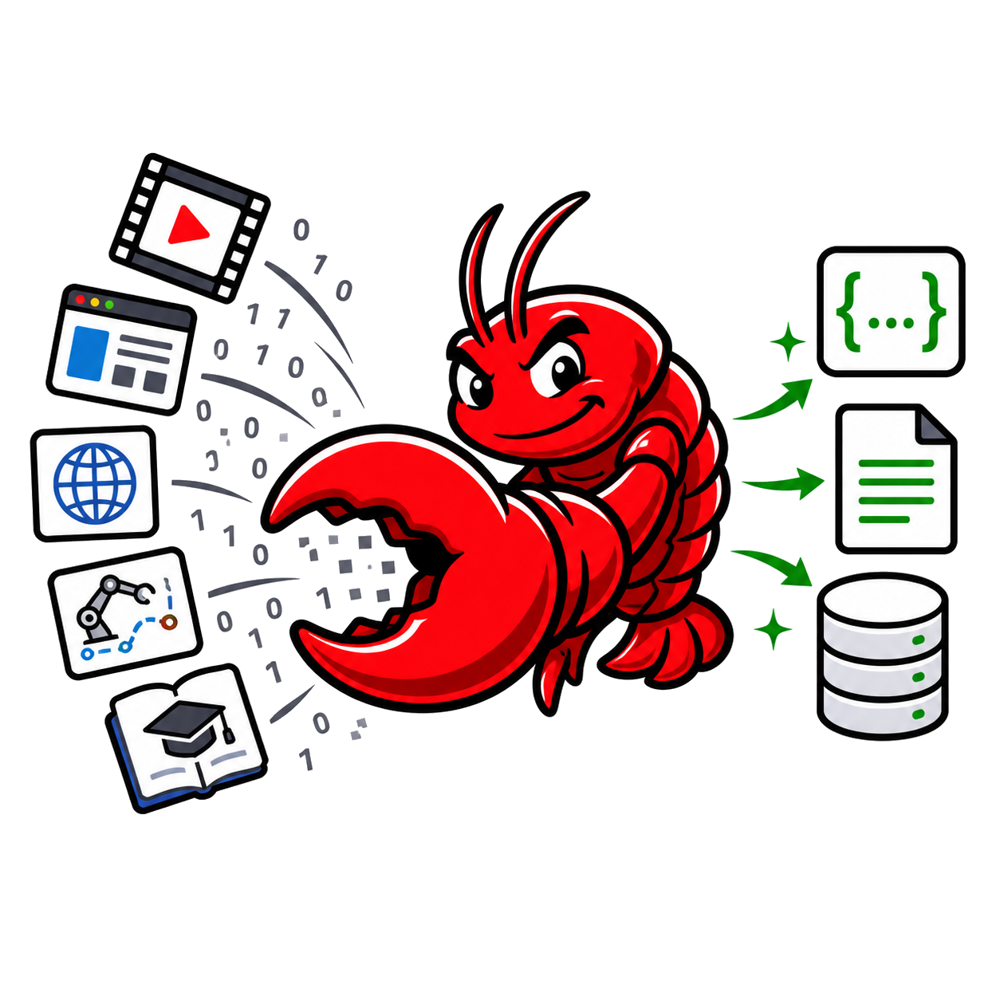

A universal framework for agentic multimodal data tailoring

DataClaw:
Agentic Multimodal Data Tailoring
Actively refining and structuring data to align with diverse user and downstream intents.
DataClaw elevates data processing to a learnable, high-order capability. Given a user
intent or downstream objective, a 9B tailoring agent filters redundant signal from
long videos, GUI traces, embodied trajectories, and editing sequences, then reorganizes
the residual into dense, verifiable, application-specific supervision — trained
with SFT + rule-driven GRPO, deployed as a single Omni model or a panel of domain Experts.
v1
Method paper drafted · code, dataset, and DataClaw-val release with v2.